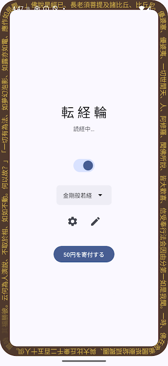
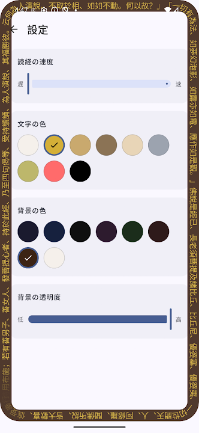
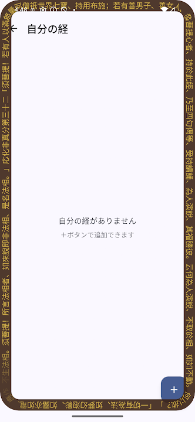

転経輪 v1.0 — 初リリース
画面の縁に沿って経文を時計回りに回す転経輪オーバーレイ
既定の経：般若心経、金剛般若経（鳩摩羅什訳全文）
自分の経を自由に追加・編集（複数登録可）
文字色・背景色・透明度・速度・フォントサイズを細かくカスタマイズ
既定の経が一周するごとに「転経数」を自動カウント・記録
メイン画面と通知の両方で転経数と進捗を確認可能
日本語・中文（簡体字・繁体字）に対応
働いている時も、瞑想している時も、画面の中で経が回り続ける、デジタル時代の転経輪です。
画面の中で経が回り続ける、デジタル時代の転経輪
現在は Android 版のみ公開しています。



転経輪 v1.0 — 初リリース
働いている時も、瞑想している時も、画面の中で経が回り続ける、デジタル時代の転経輪です。